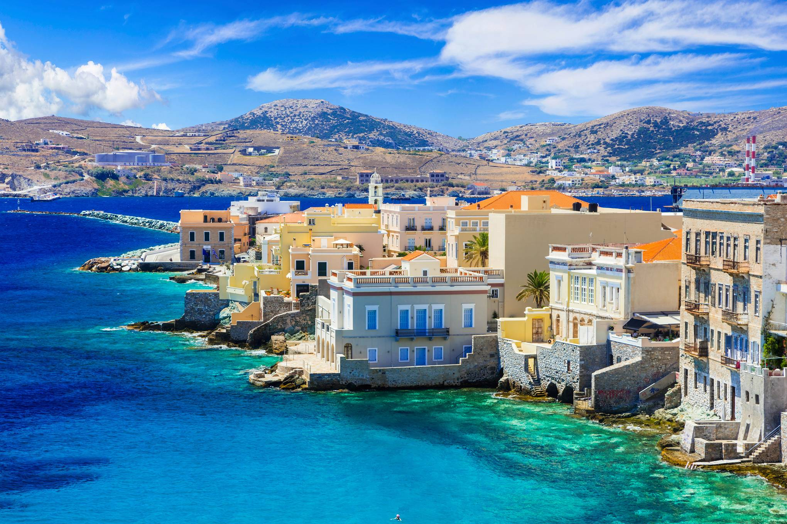

Island
The Greek islands are the main characteristic of the country’s morphology and an integral
part of its culture and tradition. Greek sovereign land includes 6,000 islands and islets
scattered in the Aegean and Ionian Seas, of which only 227 islands are inhabited. This is
a truly unique phenomenon for the European continent.The Greek Archipelago takes up 7,500
km of the country’s total 16,000 km coastline, offering a highly diversified landscape:
beaches stretching over many kilometers, sheltered bays and coves, sandy beaches with sand-dunes,
pebble beaches, coastal caves with steep rocks and dark colored sand typical of volcanic soil and
coastal wetlands.At the moment we organise tours to the following islands:
- Zakinthos
- Syros
- Milos
- Santorini
- Ios
- Crete
